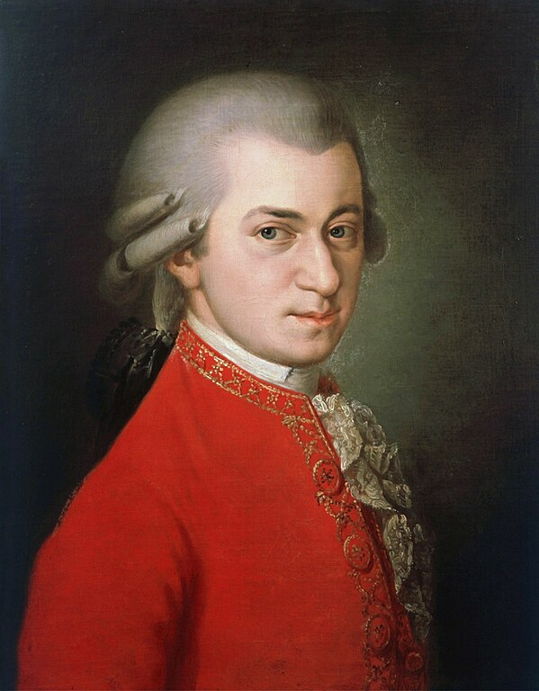

AMADEUS MOZART |
Wolfgang Amadeus Mozart - povestea unui geniu |
|
|
 Johannes Chrisosthomus Wolfgangus Theophilos Mozart s-a născut în data de 27 ianuarie 1756 în oraşul Salzburg din Austria, într-o familie de muzicieni. Tatăl Leopold a fost un muzician cunoscut ajungând compozitor la curte şi vicecapelmaistru. În acest mediu familial, în care muzica era preocuparea principală, nu se putea ca micul Wolfgang să nu o îndrăgească încă din primii ani ai vieţii. La trei ani se căţăra singur pe scaunul clavecinului şi inventa frânturi de melodii care sunau vesel. La patru ani, a compus un concert pentru clavecin, o piesă naivă, desigur, dar încărcată de melodii uşoare, pe care tatăl său le-a înregistrat pe portative, micul Wolferl (cum îl alintau părinţii) necunoscând notele. Pasiunea pentru muzică îl face să uite de jocurile copilăriei, preferând să stea în faţa clavecinului sau să cânte la vioară ore întregi, ajungând ca la cinci ani să execute cu virtuozitate, la clavecin şi vioară, concerte întregi, scrise de compozitorul Wagenseil (precursor al clasicismului). Dar viaţa avea să ia o intorsătură neaşteptată o dată cu concertul din seara de Crăciun a anului 1761 organizat în sala de festivităţi din Salzburg când copilul a uimit asistenţa prin interpretarea pe care a făcut-o la orgă şi la vioară. Tatăl Leopold a luat decizia de al prezenta împreună cu sora lui Nannerl (cu cinci ani mai mare ca Wolferl) în marile centre muzicale ale Europei. Timp de zece ani au urmat, peregrinări prin marile oraşe europene, care şi-au pus amprenta nefastă pe fizicul fragil şi gingaş al micului artist. Anul 2006 a fost desemnat ca anul Mozart. Ce inseamna pentru contemporanii nostri marele artist? Iata opini lui Kurt Palm, un scriitor din Salzburg. Intr-un interviu acordat pentru BBC, Palm a spus: "Noul slogan pentru 2006 nu este sexul vinde, ci Mozart vinde. Daca Mozart ar vedea ceea ce se intampla in prezent doar in Austria, la Viena sau Salzburg, fie ar rade, fie ar fi dezgustat". Daca pentru edili afacerea Mozart inseamna bani, pentru melomani, vara acestui an inseamna sansa de a vedea toate operele scrise de geniul din Salzburg. Astfel, in timpul Festivalului din Salzburg vor fi prezentate toate cele 22 de opere semnate de Mozart, pe parcursul a cinci saptamani. La acest eveniment vor participa muzicieni si dirijori de prima mana din lume precum Simon Rattle, Nikolaus Harnoncourt sau Ricardo Muti.
Panait Claudia Alexandra
|